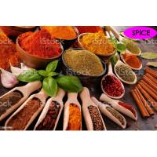

Facility Information
These are just a few examples of the spices commonly found in Bangladesh.
Turmeric (Holud): Widely used in Bangladeshi cooking, turmeric is known for its vibrant yellow color and earthy flavor. It is a key ingredient in curry dishes and lends a distinctive taste and color to the cuisine.
Chili (Morich): Bangladeshi cuisine incorporates various types of chili peppers for heat and flavor. From mild to hot, chili peppers are used in different forms, including fresh, dried, and powdered.
Mustard (Sorshe): Mustard seeds and mustard oil are extensively used in Bangladeshi cuisine. Mustard seeds can be black, brown, or yellow and add a pungent and tangy flavor to dishes. Mustard oil is commonly used for cooking and lends a unique taste to various preparations.
Coriander (Dhonia): Coriander seeds and fresh coriander leaves are widely used in Bangladeshi cooking. The seeds have a slightly citrusy flavor and are used in spice blends, while the leaves are used as a garnish or added to dishes for freshness.
If you are interested, please visit our company.
It is particularly recommended for the following rules of types.
- Working or produced by machines or machinery.
- qualiaty is standard in taste and smell.
- comparatively cheap.